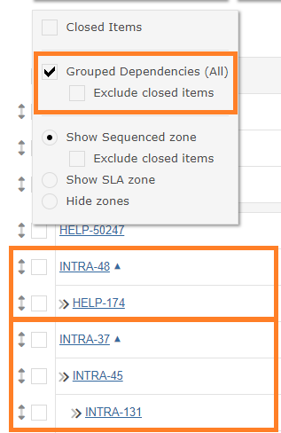
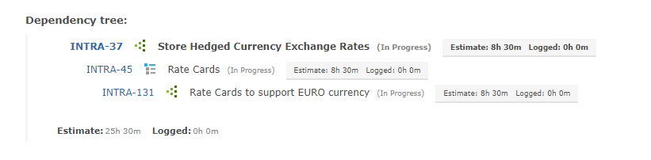

Items with dependencies can be grouped and expanded.

The dependency grouping option can be enabled through the filter options to the left of the grid.
Click on the down arrow to expand and view the dependency tree.

Note Dependencies can span across multiple projects - as per above screenshot